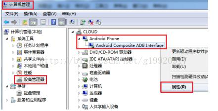
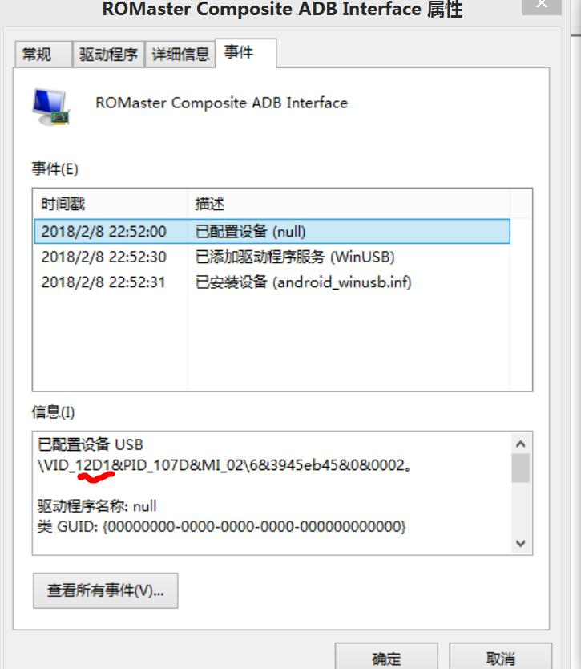

adb-手机调试
拿微信跳一跳外挂做例子
下载地址：https://adb.clockworkmod.com/
温馨提示，路径简单点
配置adb的环境变量
打开CMD控制台，输入adb，出现如下界面，即为配置成功。如图：
 源码拷贝
源码拷贝github地址：https://github.com/wangshub/wechat_jump_game
pip install -r requirements.txt
以下是问题及解决
adb device 找不到驱动
1.右键计算机管理中设备管理的android phone

2.记下该值：

3.将步骤2中的值写入到,找到你的.android文件夹，一般都是在C:\Documents and Settings\(你的用户名)下。进去找到adb_usb.ini文件，如果没有自己新建。然后在里面添加
4.adb kill-server
5.adb devices